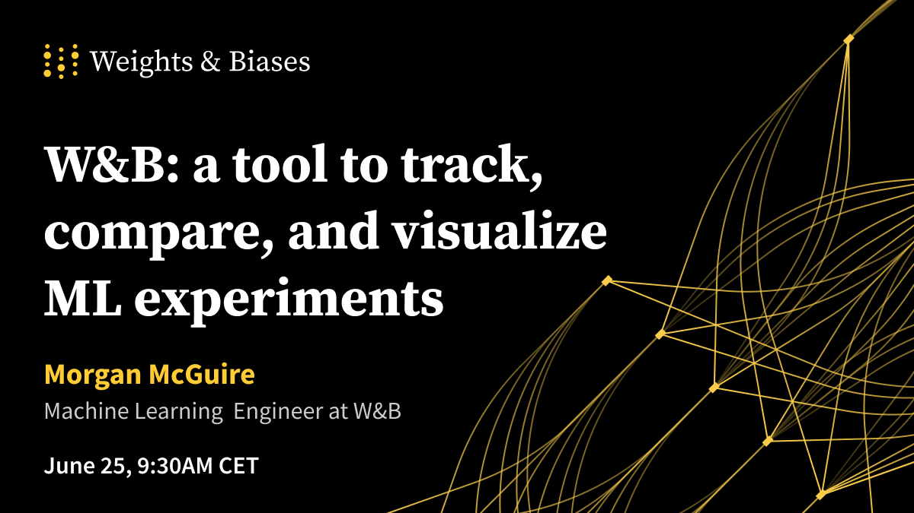

Key Note
LateRAISSE at LREC'22
Dr Sara Wilford
Senior Lecturer and Senior Research Fellow, Programme Leader Computing BSc
Topic: RRI tool for requirements for guidelines
Dr Wilford’s research interests include Computer and technology ethics, privacy and data protection, surveillance and society, and public policy. She is also an ethics advisor for the European Commission.
Dr Nedjma Djouhra Ousidhoum نجمة جوهرة أوسيدهم
Postdoctoral Research Associate, Department of Computer Science and Technology, University of Cambridge
Topic: Toxic content in NLP
Dr Ousidhoum currently works on automated fact-checking for journalists with Dr. Andreas Vlachos. Prior to this, Dr Ousidhoum was a Ph.D. student at the Hong Kong University of Science and Technology (HKUST) where she worked on toxic content detection and evaluation under the supervision of Dr. Yangqiu Song and Prof. Dit-Yan Yeung
Dr Dawn Sepehr and Dr John Hudzina
Topic: Gender and Racial Stereotype Detection in Legal Opinion Word Embeddings


Weights and Biases - Morgan McGuire
Weights and Biases: Introduction and Competition; A simple classification competition to give everyone a taste of how to use W-B tracking and Kaggle.